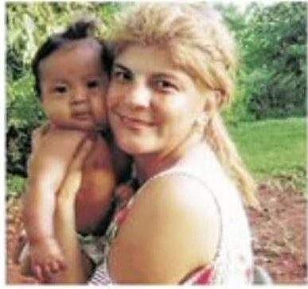
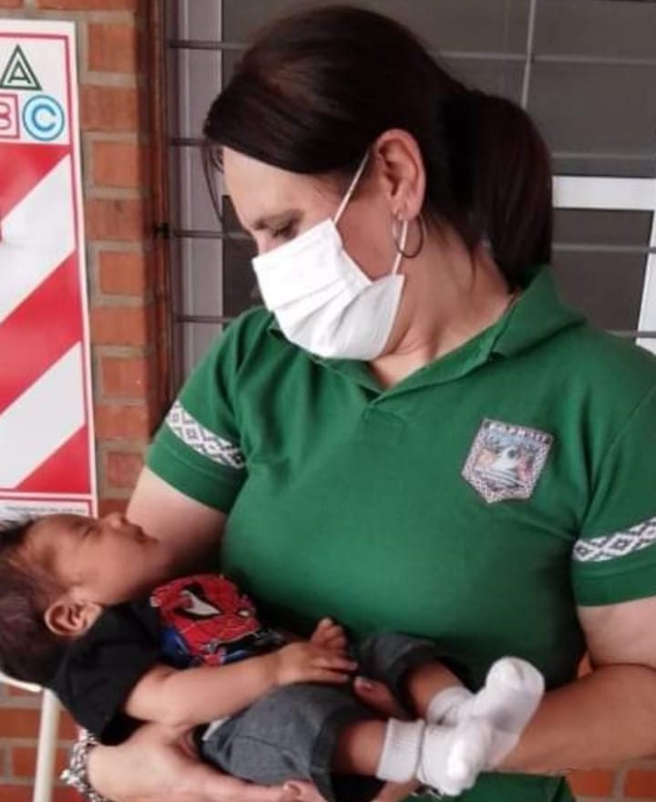
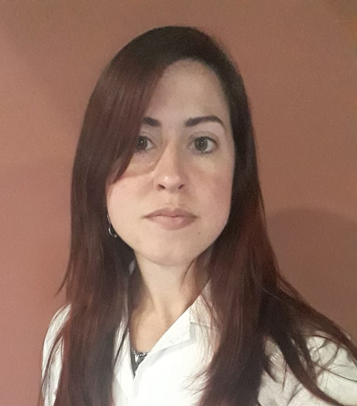

<section id="homeQuotes">
  <div class="row align-items-center homeQuotes">
    <div class="col-lg"  data-aos="zoom-up">
      
      <p class="fs-4">“Creamos la fundación para optimizar recurso y garantizar derechos”</p>
      <b>Marcela Asucena Molina-Presidente de la fundacion</b>
    </div>
    <div class="col-lg "  data-aos="zoom-up">
      
      <p class="fs-4">“Defenderemos los derechos de los niños Mvya Guarani”</p>
      <b>Lorena Matozo-Tesorera de la fundación</b>
    </div>
    <div class="col-lg " data-aos="zoom-up">
      
      <p class="fs-4">“Mi objetivo es ayudar a erradicar la desnutrición y el hambre en las comunidades aborígenes”</p>
      <b>Verónica Tatiana Liguori-Secretaria de la fundación</b>
    </div>
  </div>
</section>
